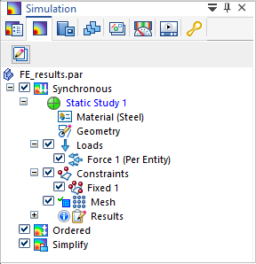
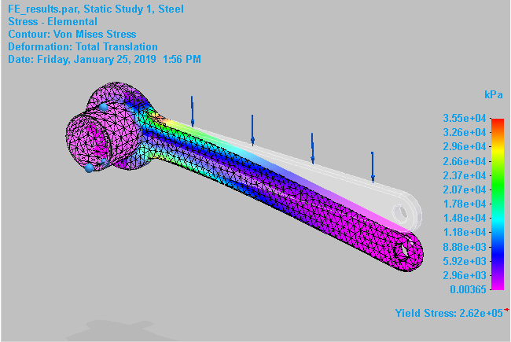
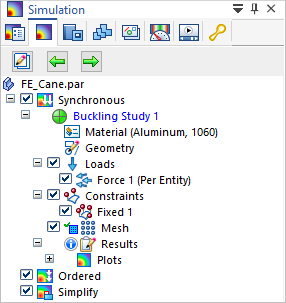
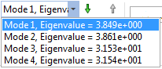
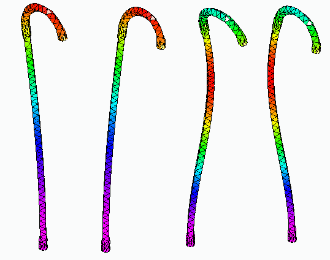
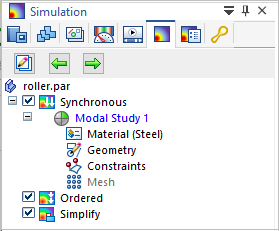
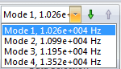
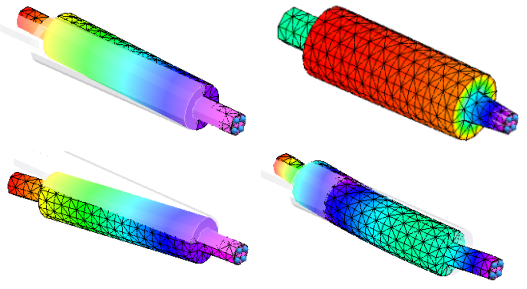

Structural studies
In Solid Edge Simulation, you can analyze the structural integrity of your part, sheet metal, and assembly models using several types of FEA studies.
The following structural study types are available:
-
-
Steady State Heat Transfer+Linear Static
-
Steady State Heat Transfer+Linear Buckling
-
Linear Static studies
To apply linear static analysis, choose the Linear Static study type in the Create Study dialog box.
Use Linear Static studies to calculate displacements, strains, stresses, and reaction forces under the effect of applied loads.
Linear static analysis represents the most basic type of analysis. The term linear means that the computed response is linearly related to the applied force. The term static means that the forces do not vary with time, or that the time variation is insignificant and can therefore be safely ignored.
Linear static analysis assumes that all loads are applied slowly and gradually until they reach their full magnitudes. After reaching their full magnitudes, loads remain constant (time-invariant). Time-variant loads that induce considerable inertial or damping forces may warrant dynamic analysis.
You can calculate the structural response of bodies spinning with constant velocities or traveling with constant accelerations, since the generated loads do not change with time.
For models that undergo large deflections relative to the actual dimensions of the part, you can use the Large Displacement Solve check box under Advanced Options in the Create Study dialog box to specify that the model deflection is processed incrementally until a solution is found.
Consider a sheet metal part with a narrow thickness. If the linear static analysis results compute the displacement of the part to be a high value relative to the size or thickness of the part, then a more accurate solution would be produced using the Large Displacement Solve option.
-
Linear static analysis is the most commonly used analysis. To learn how to define linear static studies for different types of models, you can choose one from the list of tutorials here:Practice creating and using studies.


Linear Buckling studies
To apply linear buckling analysis, choose the Linear Buckling study type on the Create Study dialog box.
Use buckling analysis to determine the load at which a thin structure or shell becomes unstable. For example, when a model contains slender parts or an assembly contains slender components that are loaded in the axial direction, they can buckle under relatively small axial loads. For such structures, the buckling load becomes a critical design factor.
Buckling analysis is usually not required for bulky structures, as structural failure occurs earlier due to high stresses.
A linear buckling study requires one load and one constraint. You also can apply a preload to a structure, such as to add a load to account for the mass of the part or assembly.

Buckling analysis using the default settings solves for four modal eigenvalues, and the mode shapes that are associated with the buckled form. The eigenvalue is multiplied by the applied load to give the critical buckling load.
When reviewing the results for this type of study, a designer is usually interested in the mode associated with the lowest eigenvalue, as this is the first opportunity for the buckling to occur.


-
For an example of how to define a linear buckling study, try the Tutorial: Linear buckling analysis.
Normal Modes studies
To apply normal modes analysis, choose the Normal Modes study type on the Create Study dialog box.
Use a Normal Modes study to find the frequencies at which a part or assembly vibrates freely. Normal modes analysis forms the foundation for understanding the dynamic characteristics of an object subject to cyclical forces at periodic intervals. It is affected by the mass of the part and the stiffness of the design. The results of a normal modes study identify the natural frequencies (frequencies of free vibration) and mode shapes (the shapes of deformation) of your design.
The objective of a normal modes analysis is for you to be able to verify that the natural frequencies and mode shapes will not approach the known critical operating frequencies required for your design.
A sorting machine operates at 60 Hz. Upon startup, the machine cycles from 0 Hz up to the operating speed. Modal analysis reports that the first two natural frequencies are 27.5 Hz and 59 Hz. This will cause reliability problems as the loads applied are amplified at the natural frequency.
All rotating components, such as a propeller rotating on a shaft, or blades rotating on a windmill, can be evaluated with respect to defined limits on their revolutions-per-minute. If the natural frequency of the supporting structure is close to an operating frequency of the component, then there can be significant dynamic amplification of the loads.
In a normal modes analysis, you apply one or more constraints as boundary conditions. You do not use the loads commands. The study navigator in the Simulation pane contains a Constraints node, but not a Loads node.

A normal modes analysis solves for the eigenvalues and eigenvectors of the model. For each eigenvalue (natural frequency), there is a corresponding eigenvector (mode shape of deformation).


-
For an example of how to define and review the results of a normal modes study, try the Tutorial: Normal modes analysis.
How do I
Verify simulation material propertiesCreate a study
Create a study using a simplified model
Define a coupled study for thermal stress analysis
Assign units in studies
Define and review a transient heat study
Define a harmonic frequency response study
Learn more
Creating and using studiesUsing materials in studies
Modifying studies
Thermal studies
Using steady state heat transfer studies
Coupled studies
Harmonic response studies
Create and solve a study using GD optimized model
Create and solve a study using an STL model
Defining thermal studies
Look up more details
Create Study (or Modify Study) dialog boxTransient Heat Options dialog box
Options: Harmonic Frequency Analysis dialog box